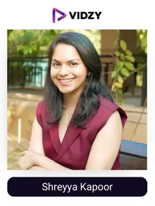
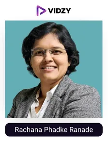
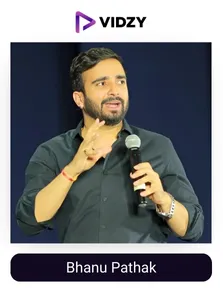

Finance is an important part of our everyday lives. From budgeting our monthly expenses to saving for that dream vacation or planning for retirement, having good financial habits can lead to a better and more secure life.
In India, the finance sector is growing rapidly, thanks to digital advancements and better investment opportunities. For instance, the digital payments sector alone is expected to hit $1.89 trillion by 2025. But despite this economic growth and better access to financial services, a large portion of the population still lacks basic financial knowledge.
Fortunately, social media has opened up new avenues for filling this gap. Platforms like Instagram and YouTube provide access to valuable knowledge on finance from real industry experts, India’s top finance UGC creators. With their profound expertise and easy-to-understand content, they teach the audience to manage money, invest wisely, and save for the future, all while following strict ethical guidelines.
At Vidzy, we have curated a list of top finance UGC creators in India, based on their reach, high engagement, and exceptional content quality, enabling brands to discover meaningful and high-impact partnerships.
But before we get into the list, let’s quickly understand who these finance influencers are and how they improving financial literacy in India.
Who are the Finance UGC creators?
Finance UGC creators are individuals who provide information on financial topics such as personal finance, banking, taxation, stock markets, insurance, mutual funds, and various government funding schemes, through social media platforms. They share best investment tips, teach smart money habits, and break down the tricky financial topics into simple and easy-to-understand insights and ideas.
Finance UGC creators of India enhance financial literacy and influence the money management decisions, with 82% of people following their advice on savings and investments.
Recognising their potential, finance brands are increasingly teaming up with them to build trust and credibility with their potential customers and achieve their marketing goals.
However, with so many finance UGC creators out there, finding the best ones that align with a brand's goals and also follow ethical guidelines can be tricky. Partnering with an experienced UGC agency can help brands scout the right and credible finance UGC creators, who align their advice with SEBI’s guidelines and ensure that the financial information shared with the audience is accurate and effective, thereby helping the finance companies reach their potential customers and grow.
Moving into the core of the blog, we will explore the list of the top finance UGC creators in India, researched and curated by Vidzy, the best UGC agency, for brands to discover trusted voices and effectively achieve their objectives and goals.
Let's dive in!
Top 10 Finance UGC Creators in India
Contents
-
1. Pranjal Kamra
Channel: Pranjal Kamra
Followers: 936KEngagement Rate: 1.25%About the creator:
Pranjal Kamra is an Indian finance content creator and founder of Finology Ventures Private Limited. His content consists of a variety of topics related to finance, like tax, stocks, insurance, debit cards, market analysis, financial planning, mutual funds, cryptocurrency, startups, assets, smart investments, and much more valuable information. He is also a bestselling author of the book named Investonomy, and an Investment guru.
Besides finance, he also shares content on sports and fitness. His content delivery is very easy to understand. His goal is to enhance financial awareness in people, to help them choose the right assets to invest in.
-
2. CA Bhagyashree Thakkar
Channel: CA Bhagyashree Thakkar
Followers: 879KEngagement Rate: 1.06%About the creator:
Bhagyashree Thakkar is a well-known finance content creator and Chartered Accountant. She simplifies complex financial topics for her audience. Her content mainly focuses on finance, taxes, business, and government schemes. The ICAI also recognised her as a "40 under 40" Chartered Accountant.
She talks about the impact of bank balances on educational opportunities in India. Her easy-to-understand way of delivering makes financial literacy more accessible to a wide audience.
-
3. Anushka Rathod
Channel: Anushka Rathod
Followers: 1MEngagement Rate: 1.92%About The Influencers-
Anushka is a top financial influencer in India. Her content mostly shares info on insurance, taxes, budgeting, and investing. She simplifies the complexity of financial wisdom into simple, relatable content. Her content on cryptocurrency, NFTs, and personal finance has empowered her followers with valuable, easy-to-digest insights
She was featured in the Forbes 30 Under 30 India issue. Many brands like ICICI Bank, Coinswitch, Jupiter, ET Money, and Upgrad have collaborated with her to expand their awareness.
-

4. Shreyya Kapoor
Channel: Shreyya Kapoor
Followers: 623KEngagement Rate: 1.05%About The Influencers-
Shreyya is a well-known financial UGC creator. She educates her followers about finance in the most creative way. Her content comprises trading, stock, investment, and savings. She shares her knowledge with her followers on SIP investment to enhance their long-term returns.
She was featured in The Mint, Finnet Media, Financial Express, and many more famous media outlets. Her inventive and captivating way of connecting with the audience has given her some of the best brand collaborations.
-

5. Rachana Phadke Ranade
Channel: Rachana Phadke Ranade
Followers: 1.1MEngagement Rate: 1.29%About The Influencers-
Rachana is one of the best financial digital content creators in India. She is also a talented entrepreneur, teacher, investor, and venture capitalist. Rachana shares her wisdom on taxes, loans, mutual funds, insurance, stocks, and all the fundamentals of finance. She has received the Mata Sanman- Youth Icon 2023 Award from the Chief Minister of Maharashtra.
Her methods are so easy to understand and creative. She advises and helps women to achieve their financial independence and decision-making.
-
6. Harish v
Channel: Harish v
Followers: 891KEngagement Rate: 1.19%About The Influencers-
Harish is a popular financial consultant, focusing on stock and mutual funds. He has served more than 950 clients in achieving their financial targets via his guidance. He is a NISM-certified Investment Adviser and a NISM-certified Mutual fund distributor.
His videos are designed to be simple and easy to grasp, making him a go-to resource for both beginners and seasoned investors looking to deepen their financial knowledge.
-
7. Keyur Rohit
Channel: Keyur Rohit
Followers: 853KEngagement Rate: 1.51%About The Influencers-
Keyur is a renowned crypto influencer and investor known as cryptokingkeyur on Instagram. He has created India’s biggest crypto community. He shares insights on cryptocurrency trading, market trends, and investment strategies. His engaging content educates and guides his followers through the complexities of the crypto world.
Keyur’s main aim is to bridge the gap in financial literacy and promote informed decision-making among his audience.
-
8. Vibhash Khattri
Channel: Vibhash Khattri
Followers: 828KEngagement Rate: 1.71%About The Influencers-
Vinbhash is a finance advisor from Varanasi who shares his wisdom on investment, business, and the stock market. He focuses on making finance easy for his audience. His posts often feature visually appealing graphics, covering subjects such as small-cap stocks, stock updates, term insurance, bitcoin halving, housing, and financial tips for a secure future.
His goal is to help people become confident with their money choices and take control of their finances.
-

9. Bhanu Pathak
Channel: Bhanu Pathak
Followers: 816KEngagement Rate: 1.86%About The Influencers-
Bhanu Pathak is a well-known Indian finance influencer. He focuses on making complex financial topics understandable for everyone. He is the founder of Growshow Media. He also utilises his experience as a former Wipro consultant to share practical financial advice with his followers. Bhanu is also a three-time TEDx speaker and hosts the engaging podcast "Batlaiye," where he discusses finance and personal development.
Bhanu shares tips on saving, investing, and managing money in the simplest and relatable way.
-
10. Akshat Shrivastava
Channel: Akshat Shrivastava
Followers: 304KEngagement Rate: 1.27%About The Influencers-
Akshat is a famous finance influencer, well-known for his content on investing and financial literacy. He is also an entrepreneur and investor, with a strong background in management consulting. He also discusses the impact of expensive education in India on social media.
He discusses various finance topics like personal finances, macroeconomic trends, stocks, and general financial literacy. He also runs an educational platform named Wisdom Hatch, which offers courses on stock markets, business analysis, and various other financial subjects.
Conclusion:
The top finance UGC creators in India are changing the way people learn about finance and deal with their money. From budgeting basics to smart investing tips, these creators simplify complex financial topics through easy-to-understand videos and reels. Their relatable content makes finance less intimidating and more accessible to everyone, from college students to working professionals. Their engaging content helps people navigate the world of finance with confidence and clarity.
Finance brands in India are partnering with these trusted creators to connect with their audience, build trust, and drive better engagement. Whether it’s promoting a savings app, a new investment platform, or sharing the basics of finance literacy, know how to deliver the message with clarity and impact.
As India’s leading UGC agency, Vidzy connects brands with the right creators who blend their financial expertise with creativity and craft meaningful content that not only informs but also inspires the audience to take smart money steps.
Looking to grow your finance brand with credible, high-performing UGC? Let’s make it happen.